ui.R
ui <- page_navbar(
title = "Palmer Penguins Explorer",
theme = bslib::bs_theme(
bootswatch = "minty"
)
# ... other UI code ...
)April 21, 2026
Shiny Apps are becoming increasingly popular for R and Python users alike. They serve as powerful tools for data visualization and interactive analysis using open-source tools. However, the default styling can feel, well, a bit boring out of the box.
This is Part 1 of a two-part series on how to make your Shiny apps look polished and customized. Here in Part 1, I will cover a few of the packages that streamline the theming process. Part 2 covers custom HTML and CSS for fine-tuning specific elements.
You can find the full code for the example shiny apps used in this blog on my GitHub:
Out of the box, Shiny uses Bootstrap 3, a popular - yet outdated - CSS framework used to style web applications. Essentially, it provides a set of pre-built styles and components for building web apps (not just in Shiny).
Here is a very simple Shiny App I built using the {palmerpenguins} package dataset with the default layout functions and no custom styling:
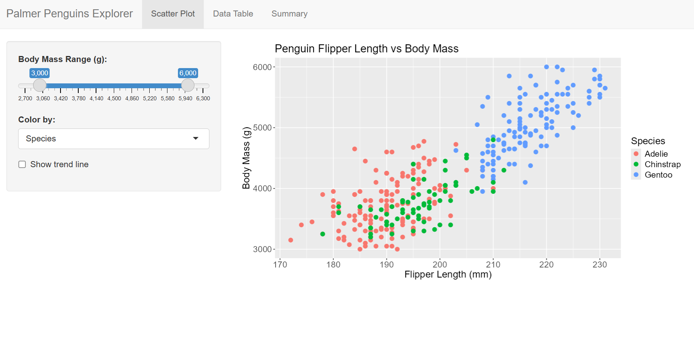
This is built with the classic layout functions: navbarPage(), tabPanel(), sidebarLayout(). There’s nothing wrong with it, but there’s a lot of room for improvement.
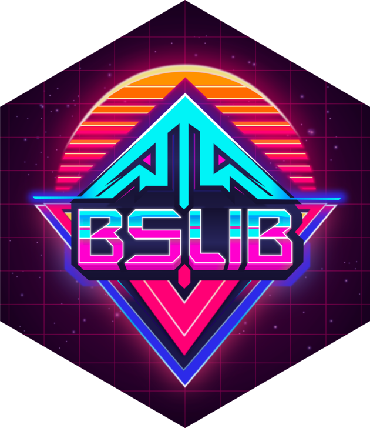
{bslib} updates Shiny to Bootstrap 5 (a more modern version than Bootstrap 3), brings 20+ pre-built themes, and a smoother theming experience in my experience. It consolidates nearly all of your styling decisions in one place and overall allows for more flexibility in customizing your app’s appearance.
Fortunately, {bslib} uses the same strucutre as {Shiny}, but with updated function names. This makes transitioning to the package really smooth if you are already comfortable with Shiny’s layout functions.
| Shiny | bslib |
|---|---|
fluidPage() |
page_fluid() |
navbarPage() |
page_navbar() |
tabPanel() |
nav_panel() |
sidebarLayout() |
page_sidebar() / layout_sidebar() |
Here, I used the same code as the default Shiny app, but swapped out the layout functions for their bslib equivalents:
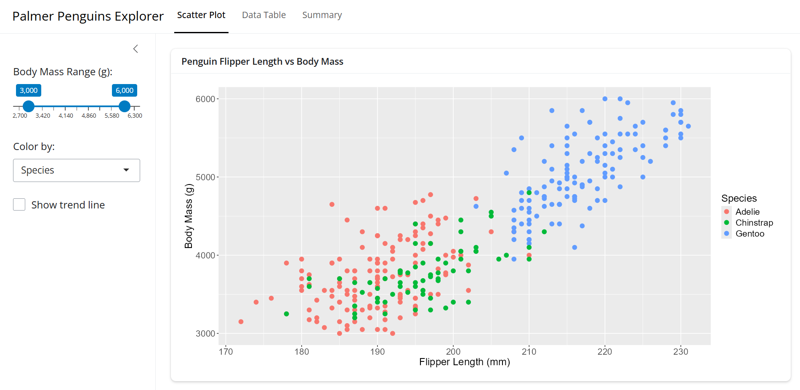
You can see the differences in the fonts, spacing, and overall feel of the app. Most notably, it uses a card based layout with the main panel contained in a box (called a card) and the sidebar is also more comparmentalized.
Maybe we want to add some theme to on top of this. Using the new functions from {bslib} doesn’t automatically overhaul the appearance.
The nice thing is that we can choose from over 20 pre-built Bootswatch themes to be used in our app. we can easily add it with the bs_theme(bootswatch = ...) function:
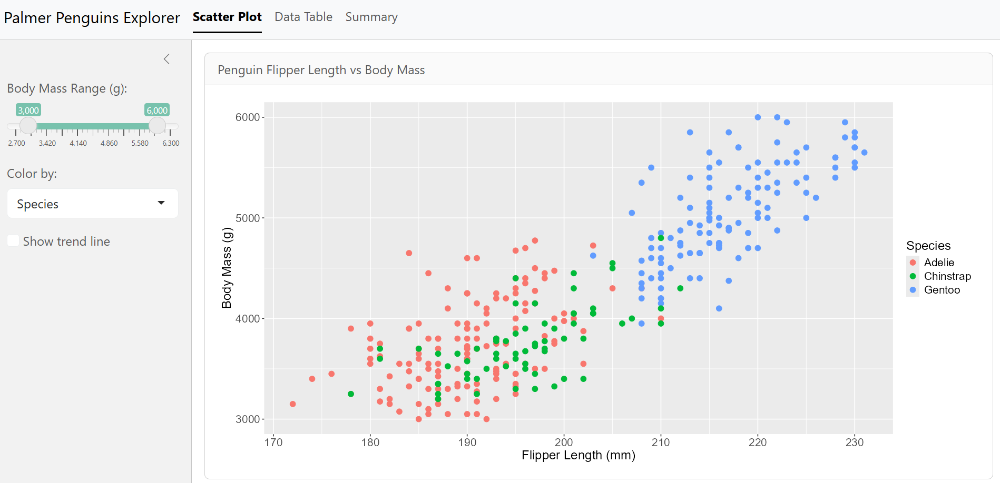
mintyWe can see some changes ot the fonts, colors, and general styling, but usually that’s not enough. We can add in our own custom colors and fonts in as well.
ui.R
ui <- page_navbar(
title = "Palmer Penguins Explorer",
theme = bslib::bs_theme(
bootswatch = "minty",
fg = "#293f2fff", # foreground color
bg = "#e5f2fcff", # background color
primary = "#2f99a7ff", # accent color
base_font = font_google("Roboto"),
heading_font = font_google("Pacifico")
),
navbar_options = bslib::navbar_options( # change the navigation bar background color
bg = "#021d31ff"
)
# ... other UI code ...
)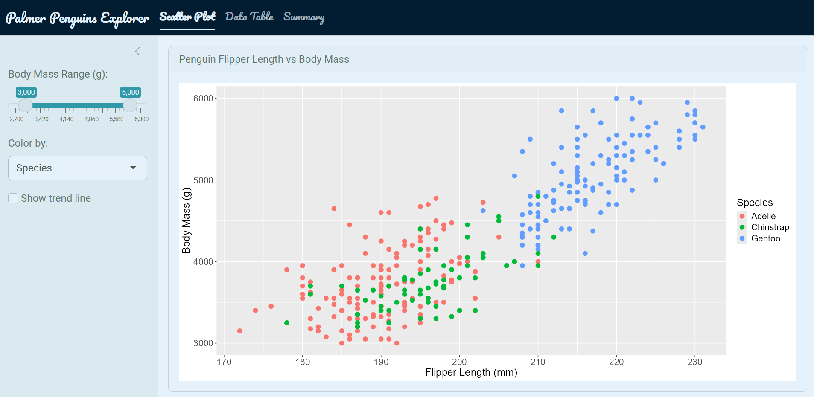
It now looks quite a bit better! We have some custome colors and fonts in there, but you can also notice the {ggplot} chart is still using its default styling options. Maybe we want to make this match up with the theme of the app as well.
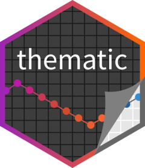
Calling the thematic::thematic_shiny() function at the end of your server automatically adapts your {ggplot2} object theme to match whatever {bslib} theme is active.
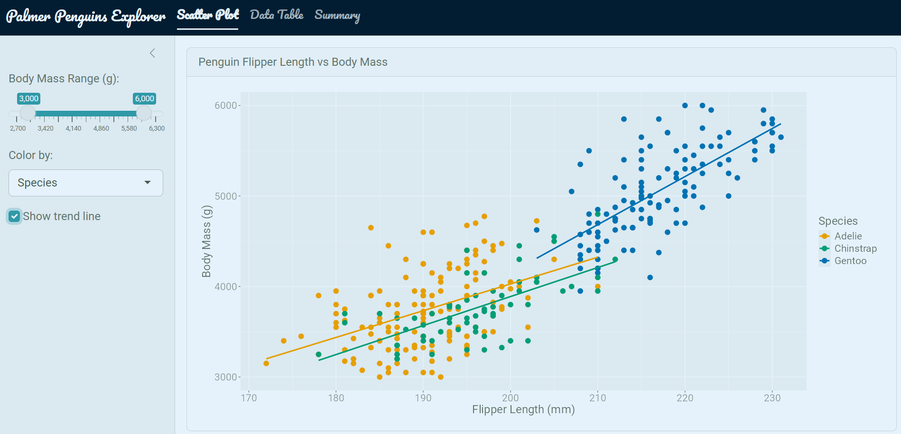
We can alse add in some other elements to make our app feel more custom. I use icons, value boxes, and prettier widgets to do this.
The 2 main options I use for icons in Shiny apps are:
{bsicons} — Bootstrap’s icon library (works natively with {bslib}){fontawesome} — more widely used icon library with more options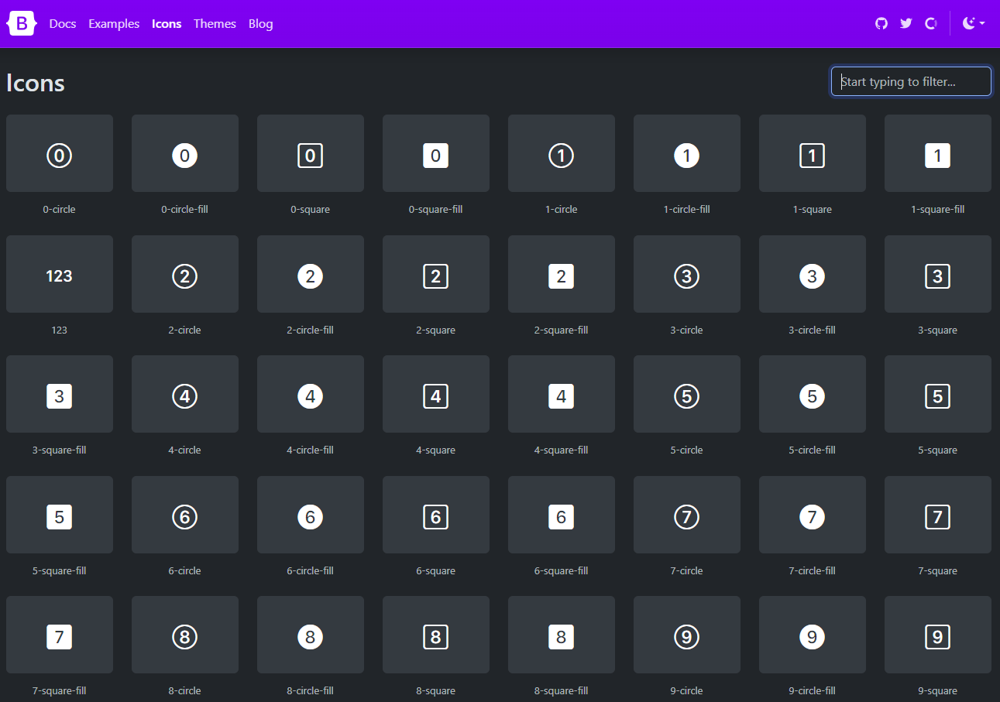
I also really like using value boxes in my apps. Essentially they are card based elements that highlight a specific value or metric. They point out key information in a visually appealing way and give apps a dashboard feel. These are provided by the {bslib} package and can be easily added in anywhere you your app with the value_box() function.
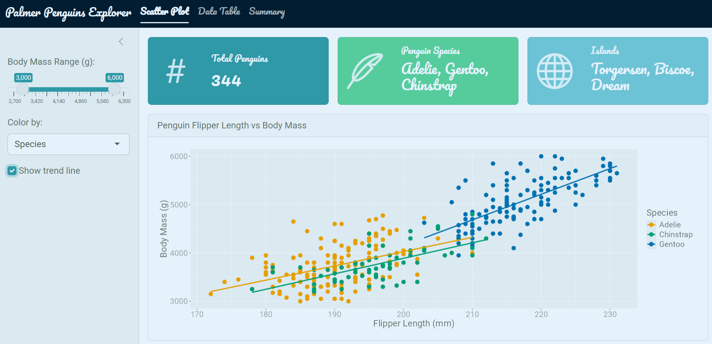
Another really great package for making your apps look more polished is {shinyWidgets}. This package offers a variety of input widgets that look much nicer than the default inputs. You can easily style and color them, and they automatically inherit the theming that you set up with {bslib}.
Run shinyWidgets::shinyWidgetsGallery() to browse all available widgets.
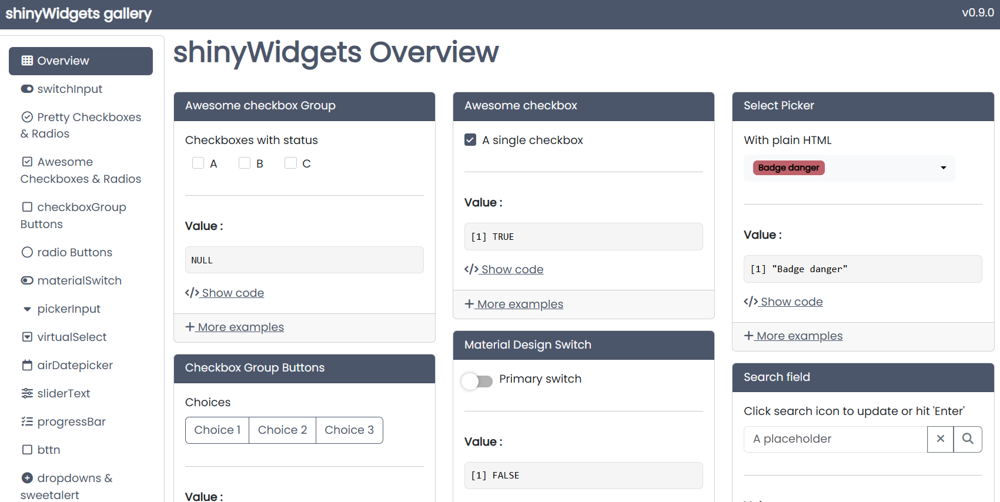
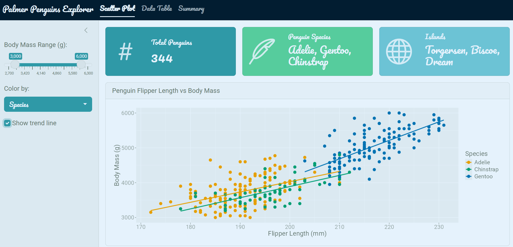
In summary, you can really elevate the look and feel of your Shiny apps with just a handful of packages. I just covered the main ones I routinely use along with their primary functions. This app wasn’t designed to be a standout example app but rather just a simple one to demonstrate how we can effectively streamline our theming process.
| Package | Role |
|---|---|
shiny |
App framework |
bslib |
Modern Bootstrap 5 theming and layout |
thematic |
Auto-theme ggplot2 plots to match the app |
shinyWidgets |
Prettier input widgets |
bsicons |
Bootstrap icon library |
For fine-tuning specific elements beyond what these packages offer, see Part 2: Custom HTML and CSS.
@online{hunter2026,
author = {Hunter, Raymond},
title = {R {Shiny} {Aesthetics} {(Part} 1)},
date = {2026-04-21},
url = {https://ramhunte.github.io/blogs/shiny_aesthetics/},
langid = {en}
}
---
title: "R Shiny Aesthetics (Part 1)"
description: "Packages to customize your Shiny apps"
author:
- name: Raymond Hunter
url: https://ramhunte.github.io/
date: 2026-04-21
citation:
url: https://ramhunte.github.io/blogs/shiny_aesthetics/
image: images/bslib.png
categories: [Shiny, R, Data Visualization]
format:
html:
code-copy: true
code-summary: "code"
code-line-numbers: false
code-tools: true
code-block-border-left: true
warning: false
message: false
toc: true
draft: false
filters:
- at: pre-quarto
path: code-window
extensions:
code-window:
enabled: true
auto-filename: true
style: "windows"
---
Shiny Apps are becoming increasingly popular for R and Python users alike. They serve as powerful tools for data visualization and interactive analysis using open-source tools. However, the default styling can feel, well, a bit *boring* out of the box.
This is Part 1 of a two-part series on how to make your Shiny apps look polished and customized. Here in Part 1, I will cover a few of the packages that streamline the theming process. [Part 2](../shiny_aesthetics_css/) covers custom HTML and CSS for fine-tuning specific elements.
You can find the full code for the example shiny apps used in this blog on my GitHub:
[{{< iconify mdi:github >}} ramhunte/shiny-aesthetics](https://github.com/ramhunte/shiny-aesthetics)
---
## Default Shiny
Out of the box, Shiny uses **Bootstrap 3**, a popular - yet outdated - CSS framework used to style web applications. Essentially, it provides a set of pre-built styles and components for building web apps (not just in Shiny).
Here is a very simple Shiny App I built using the `{palmerpenguins}` package dataset with the default layout functions and no custom styling:
{.round fig-align="center"}
This is built with the classic layout functions: `navbarPage()`, `tabPanel()`, `sidebarLayout()`. There's nothing wrong with it, but there's a lot of room for improvement.
## Packages to the Rescue
### {bslib} — The Modern Solution
{fig-align="center" width=30%}
[`{bslib}`](https://rstudio.github.io/bslib/) updates Shiny to **Bootstrap 5** (a more modern version than Bootstrap 3), brings 20+ pre-built themes, and a smoother theming experience in my experience. It consolidates nearly all of your styling decisions in one place and overall allows for more flexibility in customizing your app's appearance.
#### Shiny vs. bslib Layout Functions
Fortunately, `{bslib}` uses the same strucutre as `{Shiny}`, but with updated function names. This makes transitioning to the package really smooth if you are already comfortable with Shiny's layout functions.
| Shiny | bslib |
|-------------------|---------------------------------------|
| `fluidPage()` | `page_fluid()` |
| `navbarPage()` | `page_navbar()` |
| `tabPanel()` | `nav_panel()` |
| `sidebarLayout()` | `page_sidebar()` / `layout_sidebar()` |
Here, I used the same code as the default Shiny app, but swapped out the layout functions for their bslib equivalents:
{.round fig-align="center"}
You can see the differences in the fonts, spacing, and overall *feel* of the app. Most notably, it uses a card based layout with the main panel contained in a box (called a card) and the sidebar is also more comparmentalized.
#### Adding a Pre-Built Theme
Maybe we want to add some theme to on top of this. Using the new functions from `{bslib}` doesn't automatically overhaul the appearance.
The nice thing is that we can choose from over 20 pre-built [Bootswatch](https://bootswatch.com/) themes to be used in our app. we can easily add it with the `bs_theme(bootswatch = ...)` function:
```{r}
#| eval: false
#| filename: "ui.R"
ui <- page_navbar(
title = "Palmer Penguins Explorer",
theme = bslib::bs_theme(
bootswatch = "minty"
)
# ... other UI code ...
)
```
{.round fig-align="center"}
#### Custom Theme on Top of `minty`
We can see some changes ot the fonts, colors, and general styling, but usually that's not enough. We can add in our own custom colors and fonts in as well.
```{r}
#| eval: false
#| filename: "ui.R"
ui <- page_navbar(
title = "Palmer Penguins Explorer",
theme = bslib::bs_theme(
bootswatch = "minty",
fg = "#293f2fff", # foreground color
bg = "#e5f2fcff", # background color
primary = "#2f99a7ff", # accent color
base_font = font_google("Roboto"),
heading_font = font_google("Pacifico")
),
navbar_options = bslib::navbar_options( # change the navigation bar background color
bg = "#021d31ff"
)
# ... other UI code ...
)
```
{.round fig-align="center"}
It now looks quite a bit better! We have some custome colors and fonts in there, but you can also notice the `{ggplot}` chart is still using its default styling options. Maybe we want to make this match up with the theme of the app as well.
### {thematic} — ggplot themeing
{fig-align="center" width=30%}
Calling the `thematic::thematic_shiny()` function at the end of your server automatically adapts your `{ggplot2}` object theme to match whatever `{bslib}` theme is active.
```{r}
#| eval: false
#| filename: "server.R"
server <- function(input, output) {
# ... server code ...
thematic::thematic_shiny(font = "auto")
# ... other server code ...
}
```
{.round fig-align="center"}
## Icons, Value Boxes, and Widgets
We can alse add in some other elements to make our app feel more custom. I use icons, value boxes, and prettier widgets to do this.
### Icons
The 2 main options I use for icons in Shiny apps are:
- [`{bsicons}`](https://icons.getbootstrap.com/) — Bootstrap's icon library (works natively with `{bslib}`)
- `{fontawesome}` — more widely used icon library with more options
{fig-align="center" width="90%"}
### Value Boxes
I also really like using value boxes in my apps. Essentially they are card based elements that highlight a specific value or metric. They point out key information in a visually appealing way and give apps a dashboard feel. These are provided by the `{bslib}` package and can be easily added in anywhere you your app with the `value_box()` function.
```{r}
#| eval: false
#| filename: "ui.R"
value_box(
value = nrow(penguins),
title = "Total Penguins",
showcase = bsicons::bs_icon("hash"), # insert an icon from the bsicons library
theme = "primary"
)
```
{.round fig-align="center"}
### {shinyWidgets} — Prettier Inputs
Another really great package for making your apps look more polished is `{shinyWidgets}`. This package offers a variety of input widgets that look much nicer than the default inputs. You can easily style and color them, and they automatically inherit the theming that you set up with `{bslib}`.
::: {.callout-note}
Run `shinyWidgets::shinyWidgetsGallery()` to browse all available widgets.
:::
{fig-align="center" width="90%"}
```{r}
#| eval: false
#| filename: "ui.R"
layout_sidebar(
sidebar = sidebar(
# ... other sidebar inputs ...
shinyWidgets::pickerInput(
inputId = "species",
label = "Species",
choices = levels(penguins$species),
multiple = TRUE
)
)
)
```
{.round fig-align="center"}
## Summary
In summary, you can really elevate the look and feel of your Shiny apps with just a handful of packages. I just covered the main ones I routinely use along with their primary functions. This app wasn't designed to be a standout example app but rather just a simple one to demonstrate how we can effectively streamline our theming process.
| Package | Role |
|----------------|-------------------------------------------|
| `shiny` | App framework |
| `bslib` | Modern Bootstrap 5 theming and layout |
| `thematic` | Auto-theme ggplot2 plots to match the app |
| `shinyWidgets` | Prettier input widgets |
| `bsicons` | Bootstrap icon library |
### Part 2: Custom HTML and CSS
For fine-tuning specific elements beyond what these packages offer, see [Part 2: Custom HTML and CSS](../shiny_aesthetics_css/).